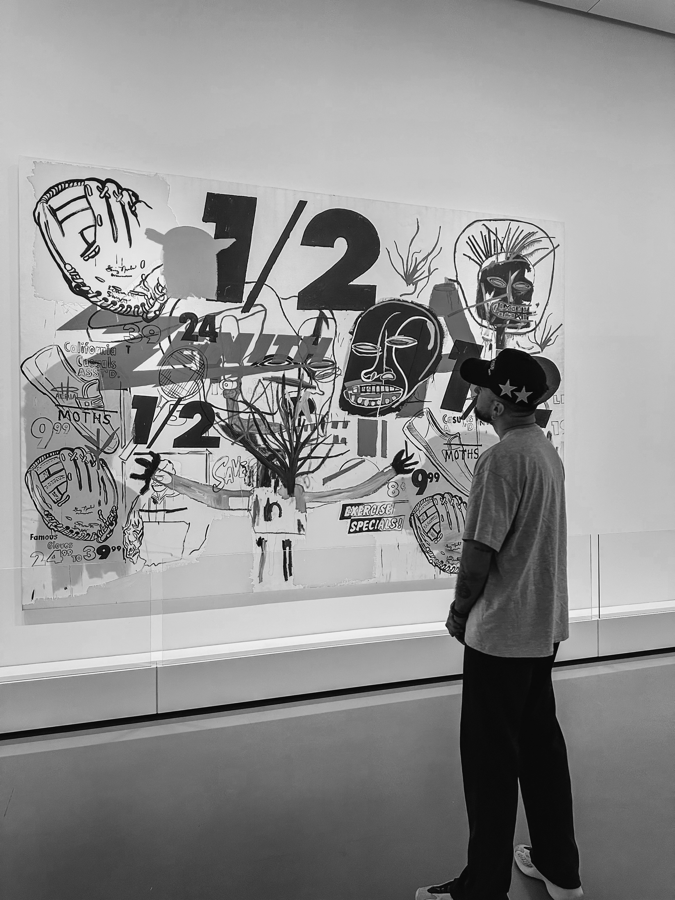
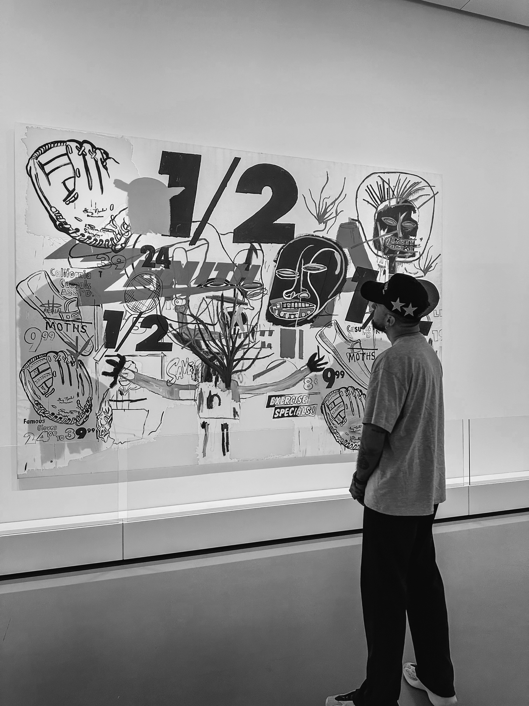

qui-suis-je?
COMPÉTENCES TECHNIQUES
PHP
JAVASCRIPT
MYSQL
HTML / CSS
REACT
JE M'APPELLE VALENTIN CEMON, J'AI 26 ANS ET JE SUIS EN RECONVERSION PROFESSIONNELLE DANS LE DOMAINE
DE
L'INFORMATIQUE. APRÈS 4 ANS D'ACTIVITÉ EN TANT QUE BURALISTE ET LIVREUR, J'AI DÉCIDÉ DE ME TOURNER
VERS
UN SECTEUR QUI ME PASSIONNE.
ACTUELLEMENT EN BTS SIO À L'IPSSI SQY, JE ME FORME AU DÉVELOPPEMENT WEB AVEC DES TECHNOLOGIES COMME HTML, CSS ET JAVASCRIPT (JS).
MON OBJECTIF ?
ACQUÉRIR DES COMPÉTENCES SOLIDES ET TROUVER UNE STABILITÉ PROFESSIONNELLE.
ACTUELLEMENT EN BTS SIO À L'IPSSI SQY, JE ME FORME AU DÉVELOPPEMENT WEB AVEC DES TECHNOLOGIES COMME HTML, CSS ET JAVASCRIPT (JS).
MON OBJECTIF ?
ACQUÉRIR DES COMPÉTENCES SOLIDES ET TROUVER UNE STABILITÉ PROFESSIONNELLE.


 
